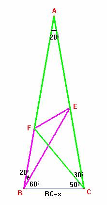

Problema 90
"ABC is an isosceles triangle. B=C=80 degrees. CF at 30 degrees to AC cuts AB
in F. BE at 20 degrees to AB cuts AC in E. Prove angle BEF = 30 degrees".
ABC es un triángulo isósceles. Es < B=
< C=80º. F está sobre AB tal que < ACF=30º.
E está sobre AC tal que < ABE=20º. Demostrar que < BEF=30º
J.W. Mercer et al, Solutions to Langley's Adventitious Angles Problem (see Langley) ,
Mathematical Gazette, 11, 1923, pp321-323.
Sol:

Para demostrar que el ángulo BEF es igual a 30º probaremos que los triángulos obtusángulos ambos en F, ACF y BEF son semejantes. Como los ángulos en A y B son iguales a 20º, sólo bastará probar que los lados que lo forman son proporcionales entre sí.De esta forma se tendrá que el ángulo en E del triángulo BEF será igual al ángulo C que es de 30º del triángulo ACF.
Por tanto, la tarea que nos queda será la de determinar la igualdad entre los cocientes siguientes:
AC/AF y BE/BF.
Usaremos un poco de trigonometría para nuestro objetivo:
Si llamamos BC= x, entonces:
;
AF= AC-x Luego entonces:
Por otro lado,
;
Y así se tendrá:
Veamos por fin que estas dos expresiones son idénticas:
Para ello:
2×cos40º×(1-2×sen10º)= 2×cos40º - 4×cos40º×sen10º = 2×cos40º - 2×(sen50º-sen30º)= 1,
c.q.d.